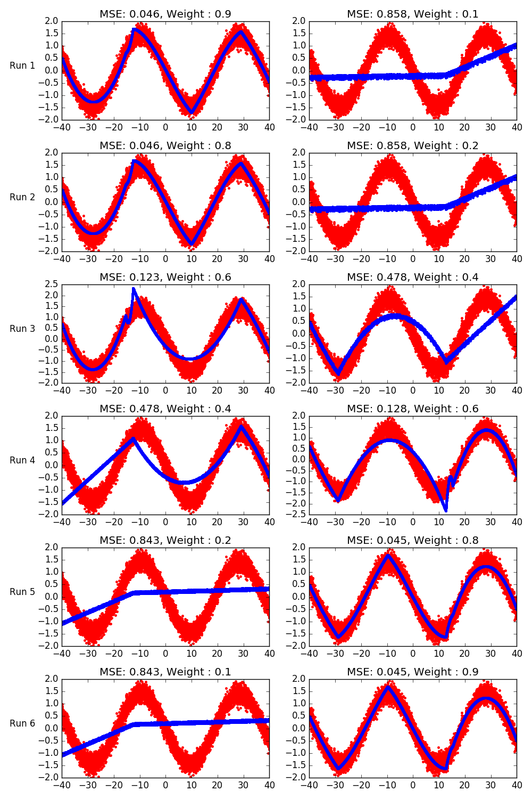

Demonstrating a use of weights in outputs with two sine functions¶
Each row in the grid is a run of an earth model. Each column is an output. In each run, different weights are given to the outputs.
Out:
Earth Model
---------------------------------------------------------------------------------
Basis Function Pruned Coefficient 0 Coefficient 1
---------------------------------------------------------------------------------
(Intercept) No 1.69845 -0.18277
h(x6+12.5327) No -0.00266262 -0.000444623
h(-12.5327-x6) No -0.349235 0.00875001
h(x6-28.9665)*h(x6+12.5327) No -0.00348994 0.000172991
h(28.9665-x6)*h(x6+12.5327) No -0.00779313 6.02476e-05
h(x6+15.3233)*h(-12.5327-x6) No -0.104159 -0.060449
h(-15.3233-x6)*h(-12.5327-x6) No 0.0124058 -0.000411153
h(x6-9.91666)*h(28.9665-x6)*h(x6+12.5327) No 0.000314487 -7.29139e-06
h(9.91666-x6)*h(28.9665-x6)*h(x6+12.5327) No 0.000328133 -1.02669e-05
h(x5-12.67) No 5.27952e-05 0.0448842
h(12.67-x5) No 3.3393e-05 -0.00185035
---------------------------------------------------------------------------------
MSE: 0.1268, GCV: 0.1275, RSQ: 0.8732, GRSQ: 0.8725
Earth Model
---------------------------------------------------------------------------------
Basis Function Pruned Coefficient 0 Coefficient 1
---------------------------------------------------------------------------------
(Intercept) No 1.69764 -0.181633
h(x6+12.5327) No -0.00264385 -0.000471527
h(-12.5327-x6) No -0.348798 0.00861386
h(x6-28.9665)*h(x6+12.5327) No -0.00349028 0.000173483
h(28.9665-x6)*h(x6+12.5327) No -0.00779256 5.94263e-05
h(x6+15.3501)*h(-12.5327-x6) No -0.100018 -0.0607957
h(-15.3501-x6)*h(-12.5327-x6) No 0.0124024 -0.00040748
h(x6-9.91666)*h(28.9665-x6)*h(x6+12.5327) No 0.000314497 -7.30574e-06
h(9.91666-x6)*h(28.9665-x6)*h(x6+12.5327) No 0.000328269 -1.04614e-05
h(x5-12.67) No 5.39345e-05 0.0448842
h(12.67-x5) No 3.39038e-05 -0.00185056
---------------------------------------------------------------------------------
MSE: 0.2080, GCV: 0.2091, RSQ: 0.7920, GRSQ: 0.7909
Earth Model
---------------------------------------------------------------------
Basis Function Pruned Coefficient 0 Coefficient 1
---------------------------------------------------------------------
(Intercept) No 2.32459 -1.1329
h(x6+12.5327) No -0.0117879 -0.000508792
h(-12.5327-x6) No -0.428569 0.00573209
h(x6-28.9665)*h(x6+12.5327) No -0.00396898 0.000202952
h(28.9665-x6)*h(x6+12.5327) No -0.00690273 4.23005e-05
h(x6+15.4124)*h(-12.5327-x6) No -0.404197 -0.0353253
h(-15.4124-x6)*h(-12.5327-x6) No 0.0150341 -0.000249502
h(x5-12.67) No 3.11991e-05 0.0967013
h(12.67-x5) No 0.000225739 -0.0113331
h(x5+28.9277)*h(12.67-x5) No -1.37599e-05 0.00479369
h(-28.9277-x5)*h(12.67-x5) No -3.77921e-05 0.00377989
---------------------------------------------------------------------
MSE: 0.2650, GCV: 0.2663, RSQ: 0.7350, GRSQ: 0.7337
Earth Model
-------------------------------------------------------------------
Basis Function Pruned Coefficient 0 Coefficient 1
-------------------------------------------------------------------
(Intercept) No 1.12452 -2.31229
h(x5-12.67) No -0.00762554 0.432957
h(12.67-x5) No -0.000444383 0.0112234
h(x5+28.9277)*h(12.67-x5) No -0.000135489 0.00690682
h(-28.9277-x5)*h(12.67-x5) No -2.79569e-05 0.00403149
h(x5-15.3056)*h(x5-12.67) No 0.000293271 -0.0151716
h(15.3056-x5)*h(x5-12.67) No -0.024625 0.514074
h(x6+12.5327) No 0.0120148 -0.000494189
h(-12.5327-x6) No -0.0953541 -0.000429754
h(x6-28.9665)*h(x6+12.5327) No -0.00375686 7.95316e-05
h(28.9665-x6)*h(x6+12.5327) No -0.00471447 -8.86523e-06
-------------------------------------------------------------------
MSE: 0.2683, GCV: 0.2697, RSQ: 0.7317, GRSQ: 0.7303
Earth Model
--------------------------------------------------------------------------------
Basis Function Pruned Coefficient 0 Coefficient 1
--------------------------------------------------------------------------------
(Intercept) No 0.17375 -1.61787
h(x5-12.67) No -0.00509358 0.341458
h(12.67-x5) Yes None None
h(x5+28.9277)*h(12.67-x5) No -0.000124386 0.00771032
h(-28.9277-x5)*h(12.67-x5) No -3.9956e-05 0.0036314
h(x5-15.3056)*h(x5-12.67) No 0.000275312 -0.0121842
h(15.3056-x5)*h(x5-12.67) No 0.0289347 0.0914436
h(x5+9.73799)*h(x5+28.9277)*h(12.67-x5) No 1.21335e-05 -0.000346296
h(-9.73799-x5)*h(x5+28.9277)*h(12.67-x5) No 5.45211e-06 -0.000300271
h(x6+12.5327) No 0.00313046 -0.000162656
h(-12.5327-x6) No -0.0450237 -7.02252e-06
--------------------------------------------------------------------------------
MSE: 0.2045, GCV: 0.2055, RSQ: 0.7955, GRSQ: 0.7945
Earth Model
--------------------------------------------------------------------------------
Basis Function Pruned Coefficient 0 Coefficient 1
--------------------------------------------------------------------------------
(Intercept) No 0.17375 -1.61787
h(x5-12.67) No -0.00509358 0.341458
h(12.67-x5) Yes None None
h(x5+28.9277)*h(12.67-x5) No -0.000124386 0.00771032
h(-28.9277-x5)*h(12.67-x5) No -3.9956e-05 0.0036314
h(x5-15.3056)*h(x5-12.67) No 0.000275312 -0.0121842
h(15.3056-x5)*h(x5-12.67) No 0.0289347 0.0914436
h(x5+9.73799)*h(x5+28.9277)*h(12.67-x5) No 1.21335e-05 -0.000346296
h(-9.73799-x5)*h(x5+28.9277)*h(12.67-x5) No 5.45211e-06 -0.000300271
h(x6+12.5327) No 0.00313046 -0.000162656
h(-12.5327-x6) No -0.0450237 -7.02252e-06
--------------------------------------------------------------------------------
MSE: 0.1248, GCV: 0.1254, RSQ: 0.8752, GRSQ: 0.8747
import numpy as np
import matplotlib.pyplot as plt
from pyearth import Earth
# Create some fake data
np.random.seed(2)
m = 10000
n = 10
X = 80 * np.random.uniform(size=(m, n)) - 40
y1 = 120 * np.abs(np.sin((X[:, 6]) / 6) - 1.0) + 15 * np.random.normal(size=m)
y2 = 120 * np.abs(np.sin((X[:, 5]) / 6) - 1.0) + 15 * np.random.normal(size=m)
y1 = (y1 - y1.mean()) / y1.std()
y2 = (y2 - y2.mean()) / y2.std()
y_mix = np.concatenate((y1[:, np.newaxis], y2[:, np.newaxis]), axis=1)
alphas = [0.9, 0.8, 0.6, 0.4, 0.2, 0.1]
n_plots = len(alphas)
k = 1
fig = plt.figure(figsize=(10, 15))
for i, alpha in enumerate(alphas):
# Fit an Earth model
model = Earth(max_degree=5,
minspan_alpha=.05,
endspan_alpha=.05,
max_terms=10,
check_every=1,
thresh=0.)
output_weight = np.array([alpha, 1 - alpha])
model.fit(X, y_mix, output_weight=output_weight)
print(model.summary())
# Plot the model
y_hat = model.predict(X)
mse = ((y_hat - y_mix) ** 2).mean(axis=0)
ax = plt.subplot(n_plots, 2, k)
ax.set_ylabel("Run {0}".format(i + 1), rotation=0, labelpad=20)
plt.plot(X[:, 6], y_mix[:, 0], 'r.')
plt.plot(X[:, 6], model.predict(X)[:, 0], 'b.')
plt.title("MSE: {0:.3f}, Weight : {1:.1f}".format(mse[0], alpha))
plt.subplot(n_plots, 2, k + 1)
plt.plot(X[:, 5], y_mix[:, 1], 'r.')
plt.plot(X[:, 5], model.predict(X)[:, 1], 'b.')
plt.title("MSE: {0:.3f}, Weight : {1:.1f}".format(mse[1], 1 - alpha))
k += 2
plt.tight_layout()
plt.show()
Total running time of the script: (0 minutes 9.319 seconds)
Download Python source code:
plot_output_weight.py
Download IPython notebook:
plot_output_weight.ipynb